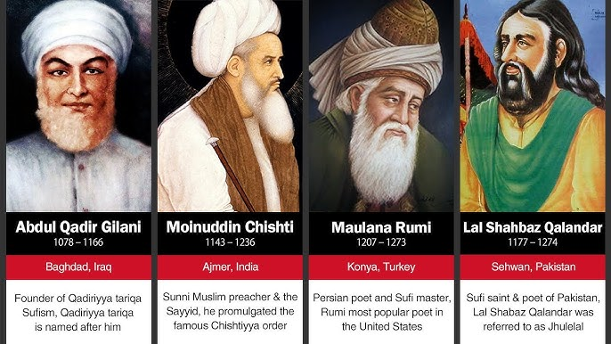

Este anul 570 după Hristos, în Peninsula Arabică, într-un ținut
arid, dominat de deșert și triburi nomade. În orașul Mecca, un
centru comercial important și loc de pelerinaj pentru numeroase
triburi păgâne, se naște un copil pe nume Muhammad. Puțini și-ar fi
imaginat atunci că acest copil va schimba pentru totdeauna cursul
istoriei, devenind fondatorul uneia dintre cele mai importante
religii ale lumii.

Orașul sfânt Mecca cu sanctuarul Kaaba în centru
Muhammad s-a născut într-o societate dominată de politeism și
idolatrie. Triburile arabe venerau diverse zeități, reprezentate
prin idoli care erau păstrați în sanctuarul Kaaba din Mecca. Orfan
de timpuriu, Muhammad a crescut sub protecția unchiului său și a
devenit un comerciant respectat, cunoscut pentru cinstea și
înțelepciunea sa. Se căsătorește cu Khadija, o văduvă bogată pentru
care lucra, și împreună au mai mulți copii.
Primele revelații
La vârsta de 40 de ani, în anul 610, în timp ce medita în peștera
Hira din apropiere de Mecca, Muhammad are o experiență care îi va
schimba viața. Îngerul Gabriel (Jibril) i se arată și îi poruncește:
Citește! În numele Domnului tău care a creat, care l-a creat pe om
din sânge închegat. Citește! Căci Domnul tău este Cel mai Generos.
Coran, Sura 96:1-3
Acesta a fost începutul revelațiilor divine care, adunate, vor forma
Coranul, cartea sfântă a musulmanilor. Inițial, Muhammad a fost
tulburat de această experiență, dar Khadija l-a încurajat și a
devenit primul său adept. Treptat, tot mai mulți oameni i s-au
alăturat, atrași de mesajul său de monoteism strict și egalitate
socială.
În Mecca, mesajul lui Muhammad a fost întâmpinat cu ostilitate de
către conducătorii tribali, care vedeau în noua credință o
amenințare la adresa vechilor tradiții și a intereselor comerciale
legate de pelerinajele la Kaaba. Musulmanii au fost persecutați și
unii au fost nevoiți să se refugieze în Abisinia (Etiopia de
astăzi).
Hegira și consolidarea comunității
În anul 622, după ce persecuțiile s-au intensificat, Muhammad și
adepții săi se mută în orașul Yathrib (redenumit mai târziu Medina),
la invitația locuitorilor de acolo. Această migrație, numită Hegira
(Hijra), marchează începutul calendarului islamic.
La Medina, Muhammad devine atât lider spiritual, cât și politic,
organizând prima comunitate islamică (Umma). Aici, el stabilește
bazele noii societăți islamice, fundamentată pe:
- Credința în Allah, unicul Dumnezeu, și în Muhammad ca profetul Său
- Rugăciunea zilnică de cinci ori (Salat)
- Dania pentru săraci (Zakat)
- Postul din luna Ramadan (Sawm)
- Pelerinajul la Mecca (Hajj), dacă condițiile permit
Acești cinci stâlpi ai Islamului au devenit fundamentul practicii
religioase musulmane și sunt urmați și astăzi de credincioși din
întreaga lume.
După opt ani de conflicte și tratative cu locuitorii din Mecca,
Muhammad revine triumfător în orașul său natal în anul 630. El intră
în sanctuarul Kaaba, distruge idolii și îl dedică adorării lui
Allah. Până la moartea sa în anul 632, majoritatea triburilor din
Peninsula Arabică acceptaseră Islamul.
Expansiunea Islamului
După moartea lui Muhammad, conducerea comunității a fost preluată de
califi („succesori"). Sub primii patru califi, considerați
„bine-călăuziți" (632-661), Islamul s-a răspândit dincolo de
Peninsula Arabică, cucerind vaste teritorii din Orientul Mijlociu,
Africa de Nord și Persia.

Expansiunea Imperiului Islamic în primele secole după apariția sa
Această expansiune rapidă a fost posibilă datorită mai multor
factori:
- Unitații triburilor arabe sub steagul Islamului
- Slăbiciunii imperiilor vecine (Bizantin și Persan)
- Toleranței religioase oferite „Popoarelor Cărții" (evrei și creștini)
- Sistemului juridic și administrativ eficient dezvoltat de musulmani
Epoca de Aur a Islamului
Sub dinastiile Omeyadă (661-750) și Abbasidă (750-1258), lumea
islamică a cunoscut o perioadă de înflorire culturală, științifică
și artistică, cunoscută drept „Epoca de Aur". În timp ce Europa
traversa Evul Mediu timpuriu, centrele culturale musulmane precum
Bagdad, Damasc, Cairo și Cordoba erau faruri ale civilizației, unde
învățați din diverse religii și culturi colaborau.
Contribuțiile islamice la dezvoltarea civilizației mondiale au fost
semnificative:
- În matematică: dezvoltarea algebrei, trigonometriei, introducerea cifrelor arabe în Europa
- În astronomie: perfecționarea astrolabului, crearea de observatoare, calcularea precisă a mișcărilor planetare
- În medicină: descoperiri în anatomie, chirurgie, farmacologie, crearea primelor spitale publice
- În chimie: dezvoltarea proceselor de distilare, sublimație, cristalizare
- În filosofie: traducerea și comentarea operelor grecești, dezvoltarea propriilor sisteme filosofice

Învățați islamici studiind și transmițând cunoștințe în timpul
Epocii de Aur
Marele învățat și filosof Averroes (Ibn Rushd) scria:
Ignoranța duce la frică, frica duce la ură, iar ura duce la
violență. Iată ecuația.
Averroes (Ibn Rushd)
Biblioteca din Cordoba adăpostea peste 400.000 de volume, într-o
vreme când cele mai mari biblioteci din Europa aveau doar câteva
sute de manuscrise. Califii și sultanii erau adesea mari patroni ai
artelor și științelor, considerând că dezvoltarea cunoașterii este o
obligație religioasă.
Diviziuni în Islam
După moartea Profetului Muhammad, au apărut divergențe privind
succesiunea la conducerea comunității islamice. Acest lucru a dus la
apariția celor două ramuri principale ale Islamului:
- Sunniții - care consideră că succesiunea trebuie să se bazeze pe consens și merit
- Șiiții - care cred că liderii trebuie să fie descendenți ai Profetului prin ginerele său, Ali
În timp, s-au conturat și alte ramuri, precum sufismul (orientarea
mistică a Islamului) și numeroase școli juridice. În ciuda acestor
diviziuni, musulmanii din întreaga lume împărtășesc fundamentele
credinței:
- Unicitatea lui Allah
- Autoritatea Coranului ca revelație divină
- Recunoașterea lui Muhammad ca ultimul profet
- Respectarea celor cinci stâlpi ai Islamului
Islamul în epoca modernă
După secole de dominație politică și culturală, lumea islamică a
cunoscut o perioadă de declin în fața puterilor europene.
Colonialismul și modernitatea au adus provocări majore, la care
diversele societăți musulmane au răspuns în moduri diferite.
Astăzi, Islamul este a doua religie ca mărime din lume, cu peste 1,8
miliarde de adepți. Comunitățile musulmane sunt prezente pe toate
continentele, contribuind la dialogul intercultural și la
diversitatea spirituală a umanității.
Mesajul central al Islamului - supunerea față de voia lui Dumnezeu
și căutarea păcii - continuă să inspire milioane de oameni în
eforturile lor de a trăi o viață virtuoasă și de a construi
societăți drepte.
Cel care ucide un suflet nevinovat e ca și cum ar fi ucis întreaga
omenire, iar cel care salvează o viață e ca și cum ar fi salvat
întreaga omenire.
Coran, Sura 5:32
Prin bogăția sa spirituală, culturală și intelectuală, Islamul
rămâne una dintre forțele care au modelat și continuă să modeleze
istoria umanității.